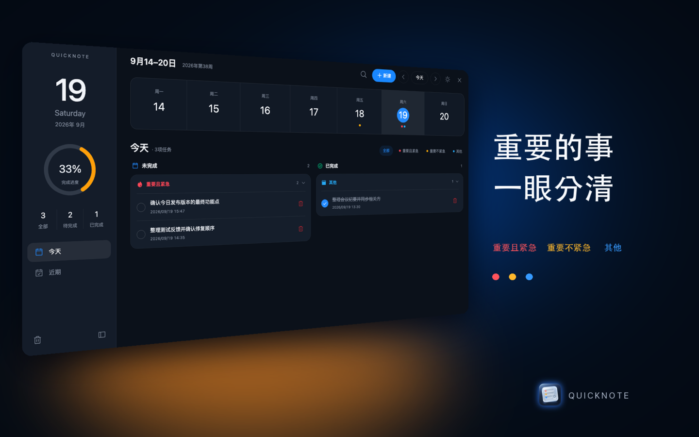
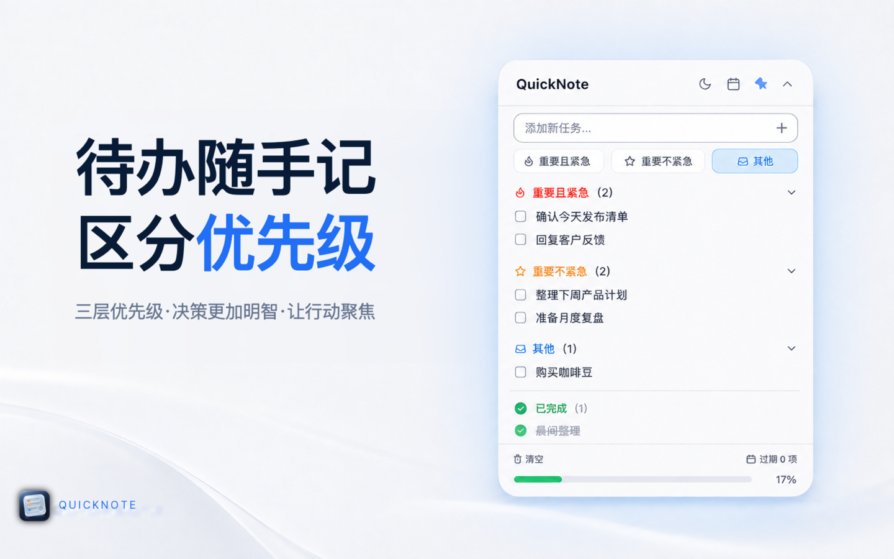
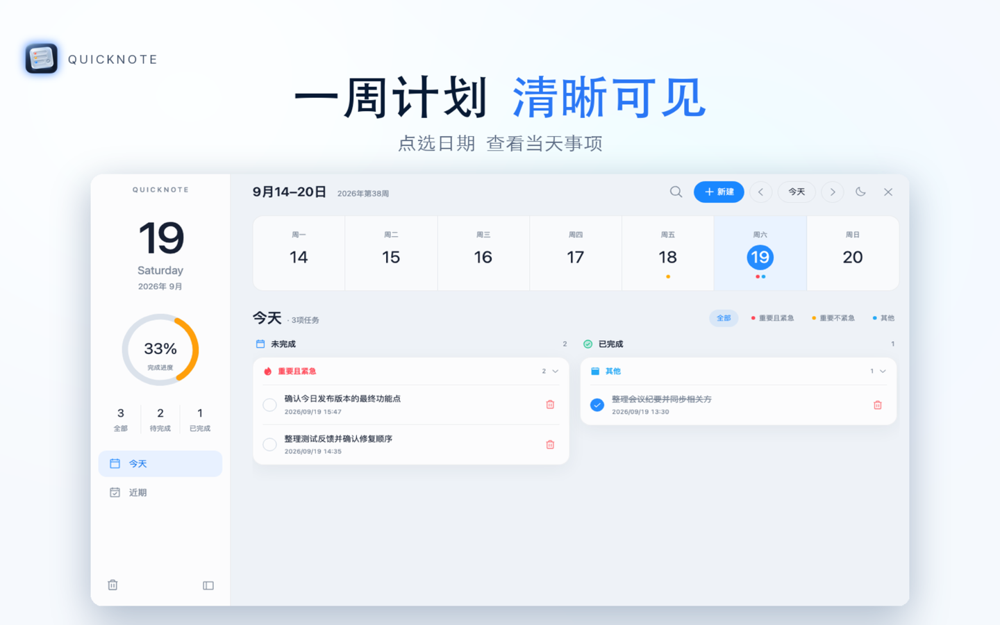
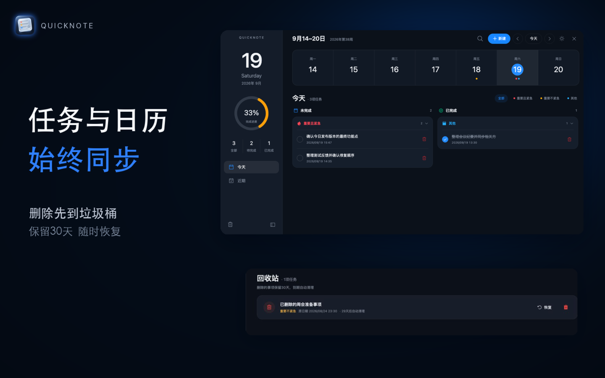

01 / 聚焦
重要的事，一眼分明
用三层优先级整理待办。打开应用，先看值得优先处理的事项。

三层优先级，让重要的事先被看见。轻量记录、清晰安排，把每天的注意力留给真正需要完成的事。

任务可以随手记下，也可以按紧急且重要、重要不紧急及其他事项归类。清晰的层次减少来回判断，让下一步更明确。
用三层优先级整理待办。打开应用，先看值得优先处理的事项。

在周视图里查看每天的任务，把随手记录的想法安排进真实的日程。

经你授权后，可将任务同步到 macOS 系统日历。误删的任务会进入回收站，在保留期内可以恢复。

从今天开始，让待办变得有条理。
了解更多与获取支持